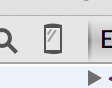
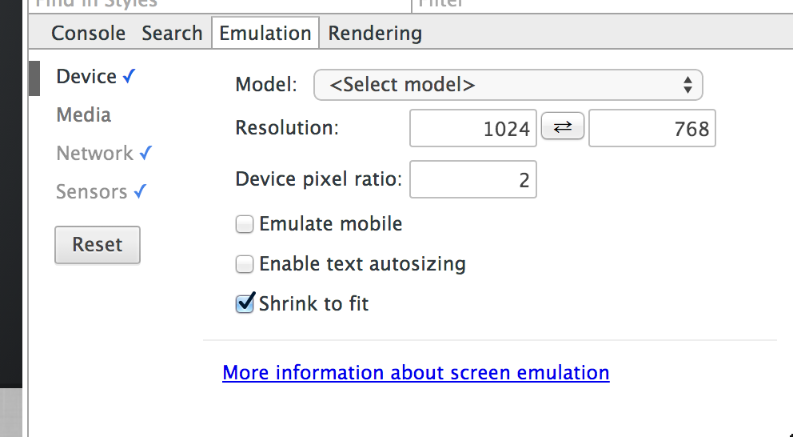
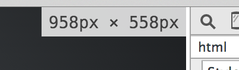

github : https://github.com/brunosimon/hetic-p2018
site : http://bruno-simon.com/hetic/p2018/
contact : bruno.simon@hetic.net - @bruno_simon
Technique permettant d'adapter la feuille de style en fonction du périphérique et de ses différents critères.
Utile au responsive design.
En HTML
<link rel="stylesheet" media="condition" href="smallscreen.css" type="text/css" />
En CSS
@media condition
{
/* Mon CSS */
}
En Javascript
<script>
if (window.matchMedia(/* condition */).matches)
{
/* Mon JS */
}
</script>
Comment savoir ?
http://goo.gl/3s8cbk : Can I Use
http://goo.gl/6hFZVj : Fallback
http://teamtreehouse.com : Treehouse
http://www.elysee.fr : Elysée
http://www.jr-associee.com : JR & associée
@media (max-width: 700px)@media (device-min-width: 700px)@media (min-device-pixel-ratio: 1.5)@media print@media not screen and (max-width: 700px)@media screen and (min-width: 600px) and (max-width: 700px)@media tv and (orientation:portrait)@media screen and (device-aspect-ratio: 16/9)@media screen and (orientation: portrait),
screen and (orientation: landscape) and (device-max-width:1000px)Afin de débugger notre code, nous allons utiliser l'inspecteur
Sur Chrome options > outils > Outils de développement
ou CMD + SHIFT + I
Activer l'émulation en cliquant sur l'icône en haut à gauche 
Une section s'ouvre

Il ne reste plus qu'à simuler l'environnement désiré
Lorsque l'inspecteur est ouvert, les dimensions du viewport s'affichent en même temps que le resize
